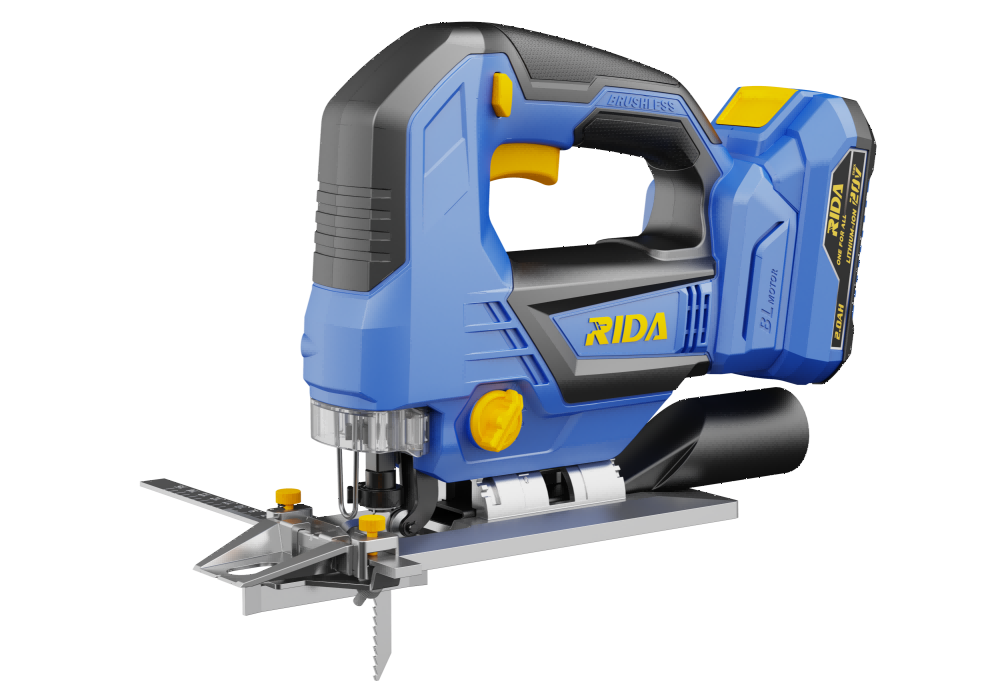

RIDA
Kit Serra tico-tico 25
Kit de serra tico-tico sem fio RIDA para cortes direitos e curvos com grande controlo.
Voltage20V
No-Load Speed0–3400spm
Stroke Length25.4mm
Bevel Angle0–45°
Orbit Settings4
Cutting Capacity135mm (wood), 10mm (soft metal), 20mm (aluminum)
Include